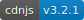

Motivation
Based on our collected data, npm has over 500,000 available packages. Open source development is massively distributed with little central coordination and disparate practices. Developers often work in the context of a software ecosystem, a complex sociotechnical network of interdependent components, libraries, and plugins, many providing similar functionality. How do contributors determine if a project is worth contributing to? How do users determine which component best suits their needs?
The transparency provided by social coding platforms like GitHub is essential to such decision making. Developers infer the quality of projects by using visible cues, known as signals, collected from personal profile and repository pages.
Signaling Theory
Badges are a type of signal, since they provide information on qualities such as build status, dependency security, and openness to contributions that are otherwise not easily perceivable. That is, badges make certain information about a project's code base or practices more transparent.
We framed our study in the context of signaling theory, which is concerned with the reliability of signals. Can you expect that a project is more likely to write tests if they display a quality assurance (e.g. continuous integration) badge? Is a project actually more likely to keep its dependencies up-to-date if it displays a dependency monitoring badge?
This is called signal fit — to what extent do signals (badges) correspond to the quality they are meant to signal?
We are concerned with two types of signals:
conventional signals, which simply provide information or a statement of intent;
assessment signals, which are associated with a third-party service that computes some property
of the project (such as test coverage).
Related Publications
- ICSE 2018: Adding Sparkle to Social Coding: An Empirical Study of Repository Badges in the npm Ecosystem.
Quality Assurance


Popularity


Information


Dependency Management
Support

Other

Travis CI, quality assurance
Used by 31.0% of packages on npm.
Why use badges?
To learn why developers use badges — what qualities they intend to signal — and how contributors interpret those signals, we conducted a survey of npm package maintainers and contributors. We received 32 maintainer and 57 contributor responses.
88% of maintainers agreed that the presence of badges is an indicator of project quality, while only 53% of contributors agreed with the same statement. 61% of contributors stated that badges do not influence their decision to contribute to projects.
All maintainers and most contributors mentioned quality assurance badges (those relating to continuous integration, test coverage, and static analysis). Maintainers stated that they intend to signal code and development quality with these badges, and more generally that their code was "built with love" or "well-written" by an "experienced developer".
Badge Adoption
46% of packages on npm use at least one badge. We identified 88 types of badges and split them into six classes based on the service they are associted with (see above).
Most prevalent is the Travis CI build status badge , appearing on 31.5% of projects.
Also common are badges showing dependency status (David DM) and npm version number .
From frequent itemset mining, the most common pair of badges is . The most common triple is .
"People tend to overwhelm visitors with too many (useless) badges, thus creating a contra effect and losing the initial purpose of having useful information"
Signals of Updated Dependencies
"Knowing whether dependencies are out-of-date and/or contain vulnerabilities is critical information to consumers/users".
We created a metric of dependency up-to-dateness, or freshness, based on previous work. Essentially, it measures the number of releases between the used version and the most up-to-date-version; major releases are given 20 points, minor releases 5 points, and patches one point. Hence, a lower score is better, with zero being completely up-to-date.
Overall, we found that at the time of this study, projects with dependency manager or information badges had significantly fresher dependencies than those without. Surprisingly, the effect was more pronounced for information badges.
Measuring freshness over a 19-month interval, we found that the adoption of a badge (in purple) correlates with improved freshness. The effect lasts longer for dependency manager badges, such as David DM , than for information badges.
Signals of Popularity
Some maintainers mentioned that signaling package popularity "instills confidence in new users" and helps to decide between similar packages through the "wisdom of the crowd".
We inflation-adjusted monthly download count history to account for npm's natural growth.

Looking at the download counts in the month prior to the study, we found that packages with badges tend to be more popular. Quality assurance and popularity badges are associated with larger effects than information badges.
The adoption of a project's first badge is correlated with a small increase in popularity, but the growth in popularity is not sustained in the future.
Signals of Test Suite Quality
Maintainers use quality assurance badges to signal development quality, such as "having tests and running them regularly".
We measured a project's proportion of tests over time (test suite size / project size), only including projects that have tests in the longitudinal analysis.
Many projects have no tests. Hence, the distribution of test suite sizes is bimodal (see right). It appears that packages with quality assurance badges and those with information badges tend to have larger test suites.
Though it is barely visible in the graph, statistical modeling confirms that there is, on average, a small increase in the proportion of tests around the time of quality assurance badge adoption. The effect does not persist over time.

Signals of Better Contributions
With a coverage badge, "PRs with new functionality tend to include new tests, as not to decrease coverage"
We hypothesized that quality assurance badges, particularly those associated with test coverage like Coveralls , would be correlated with a higher incidence of tests in pull requests. That is, pull requests are more likely to contain changes to the test suite.

By direct comparison using data from the month prior to the study, it can be seen that projects with badges tend to have a higher fraction of pull requests with tests than those without.
After the adoption of a quality assurance badge, we see an increase in the incidence of pull requests containing tests. The effect slowly decays, however. Statistical modeling suggests that this decay is slower if a coverage badge is included.

Making Better Badges
Overall, our results indicate that badges with underlying analyses, such as those offered by Travis CI, David DM, or Coveralls, are the most reliable signals. That is, you should favor badges that are assessment signals.
Our results suggest that package maintainers should make deliberate choices about what badges to display, favoring assessment signals. Package users and contributors could favor such badges as indicators of underlying practices, using them as starting points to investigate deeper qualities. Finally, service developers should design badges more carefully, providing an assessment signal based on some analysis of past conformance whenever possible.
For example, should be preferred to , since it provides a glimpse into the project's activity.
Assessment Signals (Best Predictors)

Conventional Signals